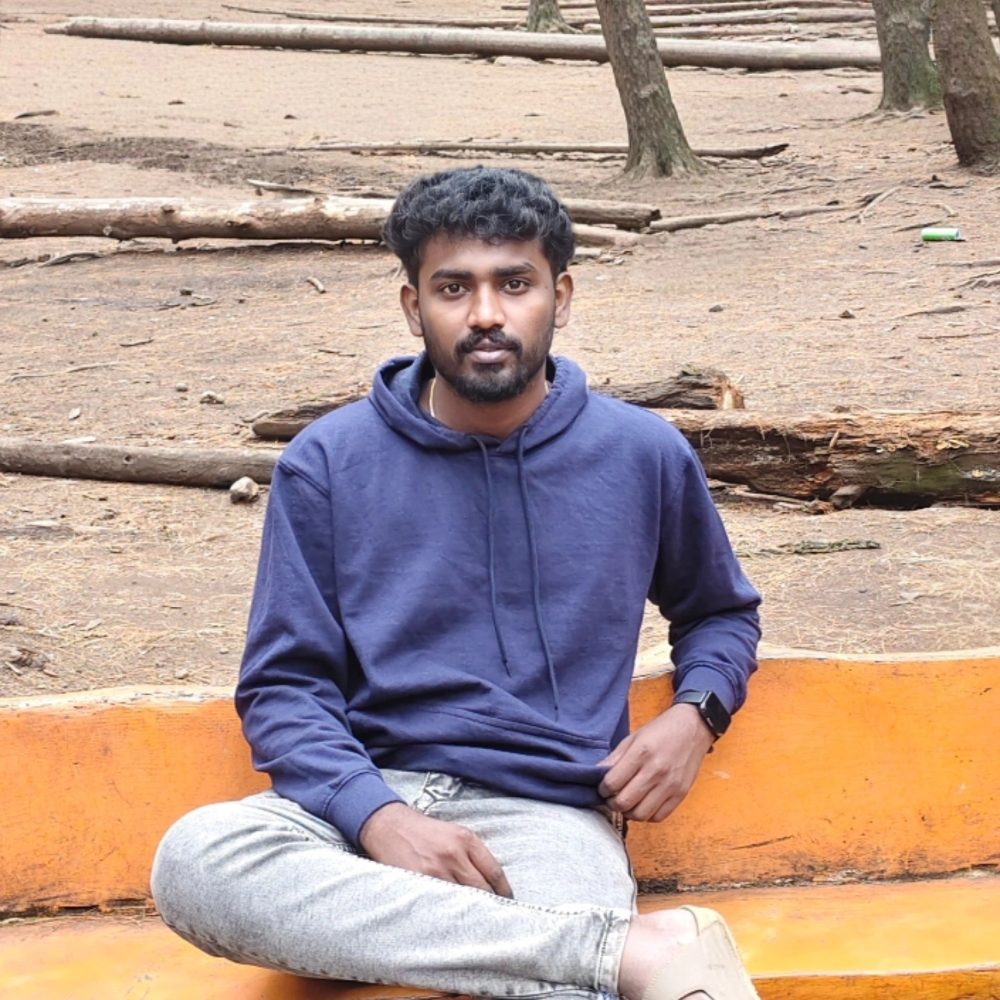

ARUN KUMAR R

5, Kamarajar Street, Meenakshi Nagar, Madurai.
Mobile: +91-8148219060
Email: rajapandiyan.arunkumar@Zohomail.in
Summary: -
To pursue a career in an esteemed organization holding a responsible position which would enhance my skills to work in competitive environment and carve a winning edge for the organization. Senior analyst on SCOM with 4+ years of experience maintaining performance of servers. Seeking to contribute my skills to a dynamic team and drive innovative solutions.
- More than 3+ years of experience in Information Technology.
- Strong Analytical and Problem-Solving Skills.
- Strong knowledge in Microsoft System centre Operation Manager and related systems primarily:
System centre Operations Manager SCOM 2012/2016/2019.
- Experience in the elementary Manager, which is Moog soft.
- Extensive experience in ITIL process, IT Change management and SQL Server.
- Experience in working on IRS/SIM with help of vendor Support HPE.
- Excellent soft skills and ability to provide detailed technical information.
Experience summary: -
- Responsible for all System centre Operations Manager (SCOM) applications and Infrastructure.
- Perform installation and administrative tasks for the Operation Manager console, provide application support for the SCOM platform and create and maintain monitoring and notification rules.
- Review and update SCOM console security, apply patches, create SCOM console roles and reviews, and create and install custom Management Packs (MP) as needed
- Excellent troubleshooting skill. Deliver SCOM custom reports on results of SCOM monitoring, using SCOM Reporting Services
- Utilize verbal and written communication skills to maintain accurate system documentation and provide training as required
- Experience in application/network performance and availability monitoring
- Migration knowledge of SCOM setup in next versions
- Experience using the Microsoft Windows PowerShell scripting engine to automate tasks with SCOM
- Implemented SCOM in enterprise environments, including the deployment of management servers, agents, and reporting services
- Developed and customized Management Packs to meet specific monitoring requirements, ensuring accurate and actionable alerts
- Follow ITIL Framework and practices – Incident, Problem and Change Management via Service- Now IT service Management Suite
- providing ongoing support to clients and ensuring the smooth functioning of enterprise systems monitoring tools.
Roles & Responsibilities: -
- Provide application support for the SCOM platform
- Create and Maintain monitoring and notification rules
- Review and update SCOM console security, apply patches
- Create SCOM console roles and reviews
- Create and Install custom Management packs
If you want know more about my skills Click here.
Professional Experience: -
| Company |
HCL tech, Madurai |
| Designation |
Senior Analyst |
| Duration |
Feb 2020 to Present |
Achievements
- Got Many Client Appreciations for active contribution in static data upload activities.
- Resolve all the ticket assigned to myself without escalating to L2
- Got top rating in the team for 2021-2022.
Education: -
- UG (Bachelor of Engineering - EEE) in Sethu Institute of Technology with aggregate of 70 with A grade percentage and passed out in 2018.
- HSC in APT Durairaj Higher Secondary School with aggregate of 74% percentage passed out in 2014.
- SSLC in KNG Matric. Higher Secondary School with aggregate of 90% percentage passed out in 2012.
Personal details: -
| Gender |
Male |
| Age |
28 |
| Nationality |
Indian |
| Languages known |
Tamil and English |
Declaration
I hereby declare that all the details furnished above are true to the best of my knowledge and belief
Place: Madurai